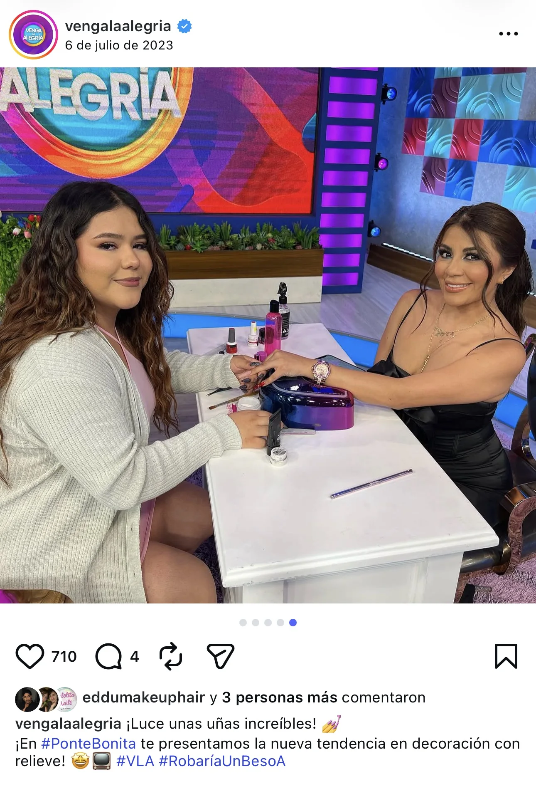
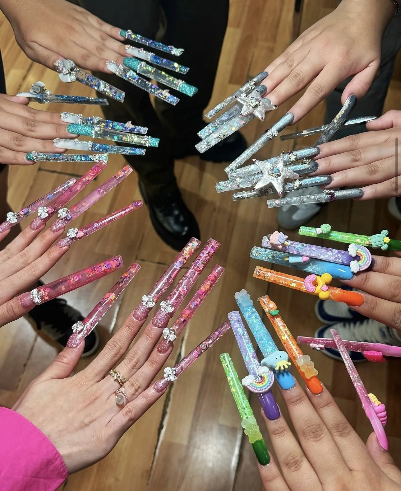
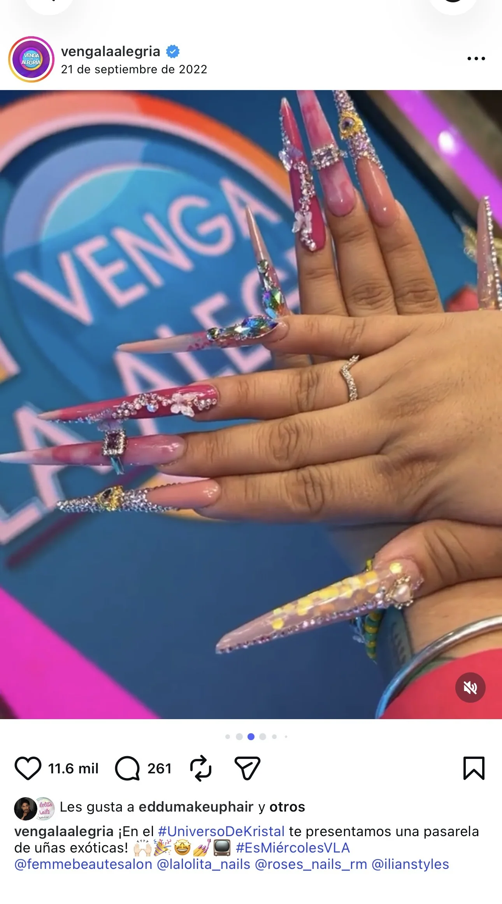
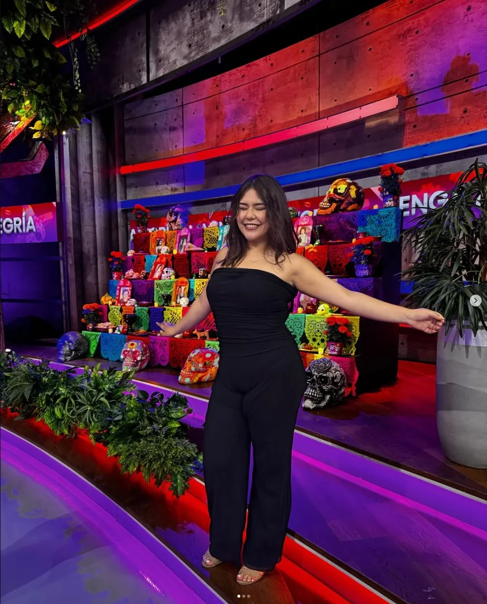

Su trabajo se ha mostrado en medios, incluyendo apariciones en Venga la Alegría (TV Azteca). Un respaldo a la calidad y el detalle en cada diseño.
✦ Con presencia en medios


Aparición en medios · 1

Aparición en medios · 2

Aparición en medios · 3
Manicura de alto nivel · Diseño a tu medida · Atención en español e inglés ✦ Ciudad de México ·Manicura de alto nivel · Diseño a tu medida · Atención en español e inglés ✦ Ciudad de México ·Manicura de alto nivel · Diseño a tu medida · Atención en español e inglés ✦ Ciudad de México ·Manicura de alto nivel · Diseño a tu medida · Atención en español e inglés ✦ Ciudad de México ·